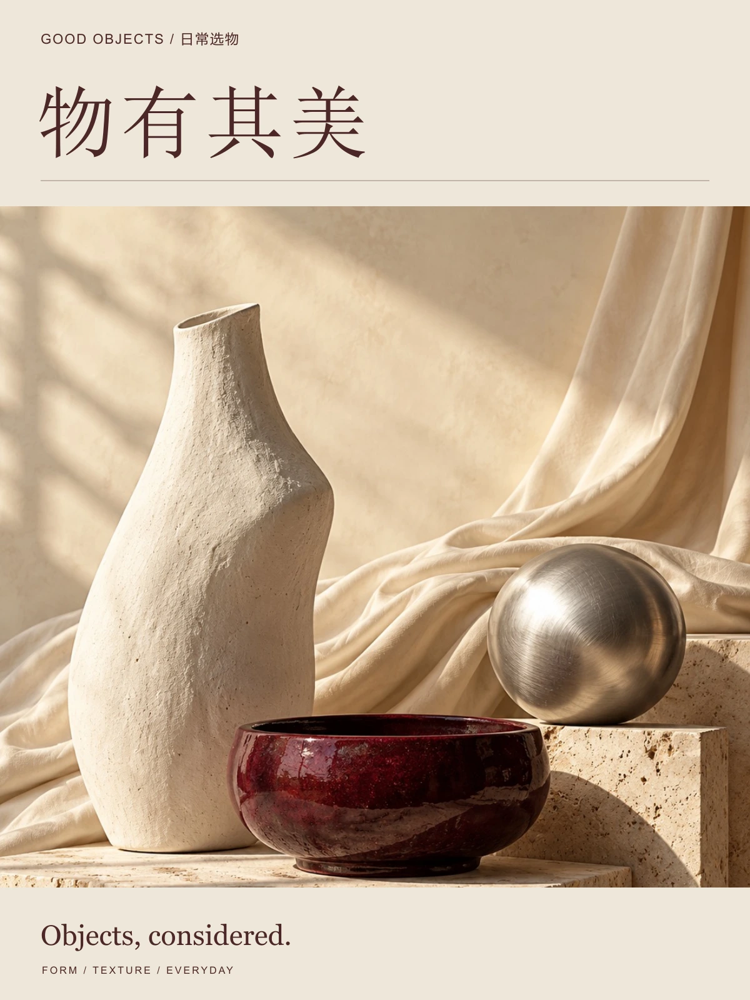
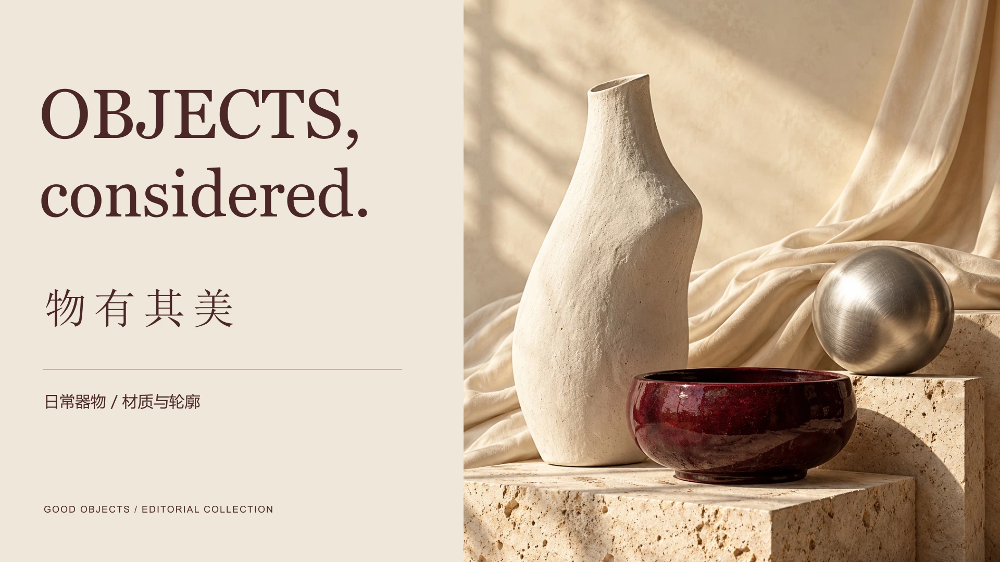
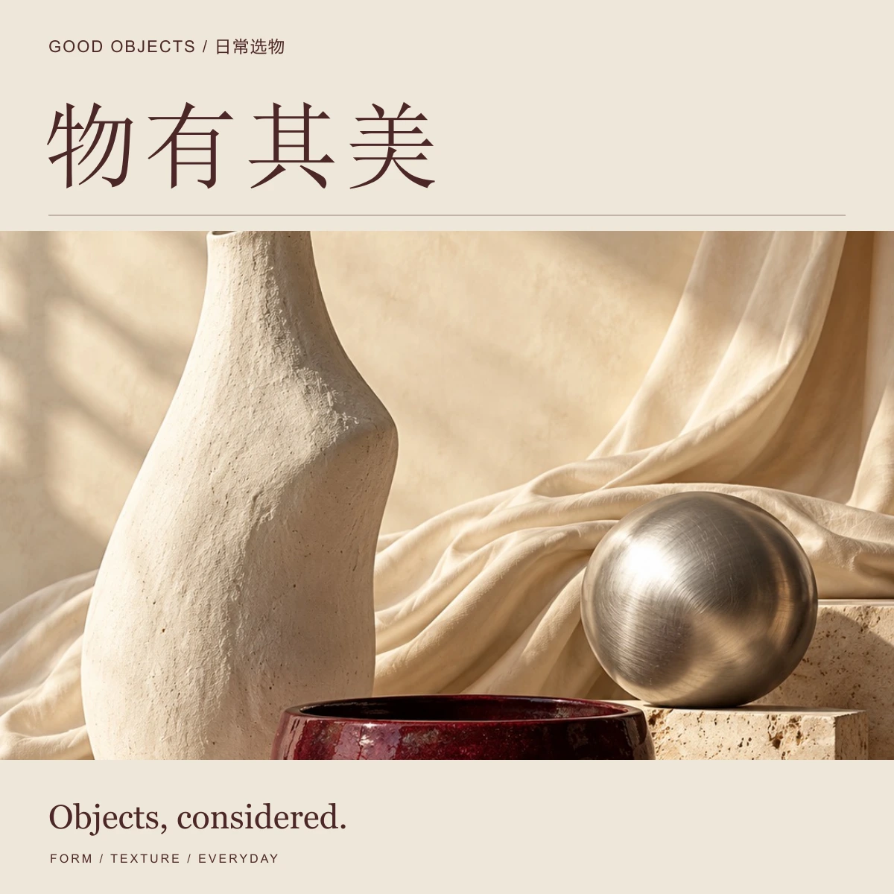

05 / 生活方式选品视觉
CONCEPT PROJECT / 2026
物有其美
Objects, considered.
在器物的轮廓里，安放日常。

项目概念
生活方式选品栏目的视觉概念。以陶器、石材、织物与金属构成材质之间的安静对话。
暖白底色与酒红文字形成克制的编辑气质。横向版本采用文字与静物分栏，让产品细节与栏目识别同时保持清晰。
横向表达
LANDSCAPE COMPOSITION / 16:9



05 / 生活方式选品视觉
CONCEPT PROJECT / 2026
Objects, considered.
在器物的轮廓里，安放日常。

生活方式选品栏目的视觉概念。以陶器、石材、织物与金属构成材质之间的安静对话。
暖白底色与酒红文字形成克制的编辑气质。横向版本采用文字与静物分栏，让产品细节与栏目识别同时保持清晰。
LANDSCAPE COMPOSITION / 16:9

